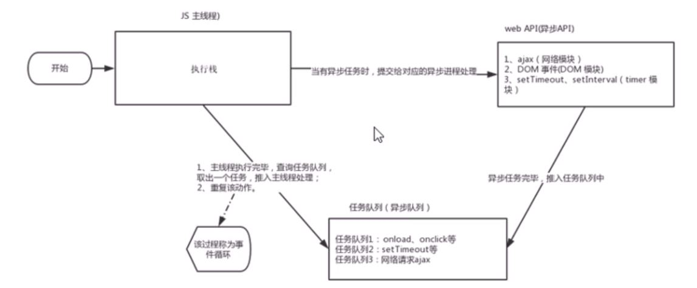

js语言的一大特点就是单线程，也就是说，同一个时间只能做一件事。这是因为js这门脚本语言诞生的使命所致————js是为处理页面中用户的交互，以及操作DOM而诞生的。比如我们对某个DOM元素进行添加和删除操作，不能同时进行，应该先添加，之后再删除。
单线程就意味着，所有任务需要排队，前一个任务结束，才会执行后一个任务。这样所导致的问题是：如果js执行的时间过长，这样就会曹诚页面的渲染不连贯，导致页面渲染加载阻塞的感觉。
为了解决这个问题，利用多核CPU的计算能力，HTML提出Web
Worker标准，允许js脚本创建多个线程。于是，js就出现了同步和异步。
同步：前一个任务结束后再执行后一个任务，程序的执行顺序与任务的排列顺序是一致的、同步的。比如做饭的同步做法：烧水煮饭，，等水开了（10分钟之后），再去切菜。
异步：再做一件事时：因为这个事件会花费很长事件，在做这件事的同时，你还可以去处理其他事情。比如做饭的异步做法，我们再烧水的同时，利用这10分钟，去切菜，炒菜。
他们别的本质区别：这条流水线上各个流程的执行顺序不同。
同步任务：同步任务都在主线程上执行，形成一个执行栈。
异步任务：js的异步是通过回调函数实现的。
一般而言，异步任务有以下三种类型：
1.普通事件，如click、resize等
2.资源加载，如load、error等
3.定时器，包括setInterval、setTimeout等
异步任务相关会点函数添加到任务队列中（任务队列也称为消息队列）。
js执行机制：
1.先执行执行栈中的同步任务。
2.异步任务（回调函数）放入任务队列中。
3.一旦执行栈中的所有同步任务执行完毕，系统就会按次序读取任务队列中的异步任务，于是被读取的异步任务结束等待状态，进入执行栈，开始执行。
